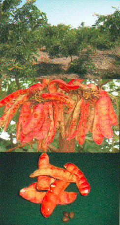
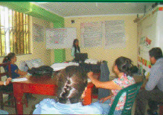

Cooperativa Agraria Productores de Tara.
El presente estudio, constituye la herramienta de gestión que dirigirá la marcha institucional de la Cooperativa APT del Norte por los siguientes cinco años; con la finalidad de contribuir a que la Cooperativa sea más competitiva, supere sus problemas y se acerque más a a sus objetivos institucionales. Descargar
| SOCIOS | Indicador | |
|---|---|---|
|  | Se crece de 20% a 50% en número de socios que accede a riego tecnificado | Número de socios |
| Se aumenta la productividad de 3,5 kb por árbol a 7 kb por árbol | Productividad | |
| Crece el compromiso del socio de 50% a 80% | Aportes, asistencia a reuniones | |
| Mejora el ingreso económico del socio en un 50% como resultado de la mejora en productividad | Soles, ingreso de los socios. | |
| 50 hectáreas reforestadas con tara | Número de hectáreas reforestadas con tara | |
| Se crece de 125 las has certificadas como organiza hasta 450 has certificadas | Número de hectáreas con certificación orgánica | |
| PROCESOS | ||
 |
Se crece de 5 aliados a 10 en 5 años | Mejora en la política salarial en función al cumplimiento de metas |
| Número de aliados | Mejora salarial | |
| MERCADO | ||
|  | Se crece en un 5% el acopio para venta como tara en vaina | Toneladas de tara acopiada |
| 1800 tn de tara en polvo y 500 de tara en goma | Toneladas de tara en polvo y de tara en goma vendida | |
| Se crece de 59% el % tanino a 63% | % de caninos en la tara | |
| FINANCIERO | ||
|
Al quinto año se cuenta con un capital de trabajo de 1.5 millones de USD | Soles de capital de trabajo |
| Se mejora la utilidad operativa de 0.87% a hasta un mínimo de 8% | % de utilidad operativa |
| Objetivo Estratégico | Indicador | |
|---|---|---|
| Objetivo Estratégico 1 | Ser líder en la producción de tara | |
| Objetivo Estratégico 2 | Mejorar condiciones económicas, sociales y ambientales | |
| Objetivo Estratégico 3 | Proteger y conservar el Medio ambiente. | |
| Objetivo Estratégico 4 | Desarrollar una Gestión eficiente e innovadora | |
| Objetivo Estratégico 5 | Ser Líder en acopio, transformación y exportación de tara en polvo y en goma | |
| Objetivo Estratégico 6 | Ser reconocidos a nivel nacional e internacional por la calidad de su producto | |
| Objetivo Estratégico 7 | Contar con solidez económica |